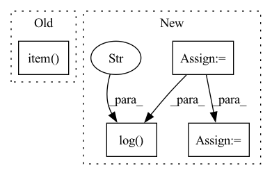

Pattern ID :5642
Before Change
loss = F.cross_entropy(logits.view(-1, logits.size(-1)), targets.view(-1))
self.trainer.my_loss = loss.item()
self.trainer.my_epoch_loss = loss.item()
self.log("lr", self.trainer.my_lr, prog_bar=True, on_step=True)
self.log("loss", self.trainer.my_epoch_loss, prog_bar=True, on_step=True)
return L2Wrap.apply(loss, logits)After Change
loss = F.cross_entropy(logits.view(-1, logits.size(-1)), targets.view(-1))
if self.trainer.global_rank == 0:
t_now = time.time_ns()
try:
t_cost = (t_now - self.trainer.my_time_ns) / 1e9
self.log("REAL it/s", 1.0 / t_cost, prog_bar=True, on_step=True)
self.log("token/s" , args.ctx_len * float(args.devices) * args.micro_bsz / t_cost, prog_bar=True, on_step=True)
except:
pass
self.trainer.my_time_ns = t_now
self.trainer.my_loss = loss.item()
self.trainer.my_loss_sum += self.trainer.my_loss
self.trainer.my_loss_count += 1In pattern: SUPERPATTERN
Frequency: 3
Non-data size: 4
Instances Fragment ID: 19860188
Project Name: blinkdl/rwkv-lm
Commit Name: 6ab2e71c259bd7acd59eaa089b6643c2b97b1161
Time: 2022-09-05
Author: a@a.com
File Name: RWKV-v4neo/src/model.py
M Class Name: RWKV
N Class Name: RWKV
M Method Name: training_step(3)
N Method Name: training_step(3)
M Parent Class: pl.LightningModule
N Parent Class: pl.LightningModule
M File Name: RWKV-v4neo/src/model.py
N File Name: RWKV-v4neo/src/model.py
M Start Line: 315
M End Line: 320
N Start Line: 313
N End Line: 334
Before Change
targets = [self.text_process.int2text(sent) for sent in targets]
list_wer = torch.tensor(
[self.cal_wer(i, j).item() for i, j in zip(predicts, targets)]
)
wer = torch.mean(list_wer)
After Change
def validation_step(self, batch: Tensor, batch_idx: int):
inputs, input_lengths, targets, target_lengths = batch
targets_ctc = targets[:, 1:-1]
outputs, output_lengths = self(inputs, input_lengths)
loss = self.criterion(
outputs.permute(1, 0, 2), targets_ctc, output_lengths, target_lengths
)
self.log("test loss" , loss)
if batch_idx % self.log_idx == 0:
label_sequences, predict_sequences, wer = self.get_wer(
targets_ctc, inputs, input_lengths
)
self.log_output(predict_sequences[0], label_sequences[0], wer) Fragment ID: 19860201
Project Name: manhph2211/vistt
Commit Name: 742be9424d91058a3c3e25adc4db742534fffab3
Time: 2022-08-30
Author: manhph5@vingroup.net
File Name: VASR/local/src/engine/trainer.py
M Class Name: ConformerModule
N Class Name: ConformerModule
M Method Name: validation_step(3)
N Method Name: validation_step(3)
M Parent Class: BaseModel
N Parent Class: pl.LightningModule
M File Name: VASR/local/src/engine/trainer.py
N File Name: VASR/local/src/engine/trainer.py
M Start Line: 72
M End Line: 103
N Start Line: 106
N End Line: 126
Before Change
targets = [self.text_process.int2text(sent) for sent in targets]
list_wer = torch.tensor(
[self.cal_wer(i, j).item() for i, j in zip(predicts, targets)]
)
wer = torch.mean(list_wer)
After Change
def test_step(self, batch: Tensor, batch_idx: int):
inputs, input_lengths, targets, target_lengths = batch
targets_ctc = targets[:, 1:-1]
outputs, output_lengths = self(inputs, input_lengths)
loss = self.criterion(
outputs.permute(1, 0, 2), targets_ctc, output_lengths, target_lengths
)
self.log("test loss" , loss)
if batch_idx % self.log_idx == 0:
label_sequences, predict_sequences, wer = self.get_wer(
targets_ctc, inputs, input_lengths
)
self.log_output(predict_sequences[0], label_sequences[0], wer) Fragment ID: 19860195
Project Name: manhph2211/vistt
Commit Name: 742be9424d91058a3c3e25adc4db742534fffab3
Time: 2022-08-30
Author: manhph5@vingroup.net
File Name: VASR/local/src/engine/trainer.py
M Class Name: ConformerModule
N Class Name: ConformerModule
M Method Name: test_step(3)
N Method Name: test_step(3)
M Parent Class: BaseModel
N Parent Class: pl.LightningModule
M File Name: VASR/local/src/engine/trainer.py
N File Name: VASR/local/src/engine/trainer.py
M Start Line: 105
M End Line: 136
N Start Line: 128
N End Line: 148